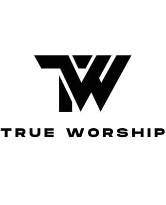
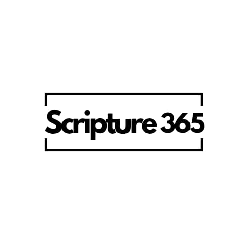

A True Worship program dedicated to reading the entire Bible in one year. Three Old Testament chapters and one New Testament chapter, every single day.
Stay consistent. Here is your reading assignment for today.
Current Streak
0 days
Days Completed
0 of 365
0 of 1,189 chapters
0 of 260 chapters
No readings logged yet. Start your journey today!
The foundation of our faith. It chronicles the creation of the world, the history of the Israelites, the Law given through Moses, the poetry of worship, and the prophecies foretelling the coming of the Messiah. Reading this daily grounds us in God's historical faithfulness.
1,189 Chapters across 39 Books
The fulfillment of the promise. It opens with the Gospels detailing the life, death, and resurrection of Jesus Christ. It follows with the Acts of the early church, the Epistles offering guidance to believers, and concludes with the ultimate victory in Revelation.
260 Chapters across 27 Books